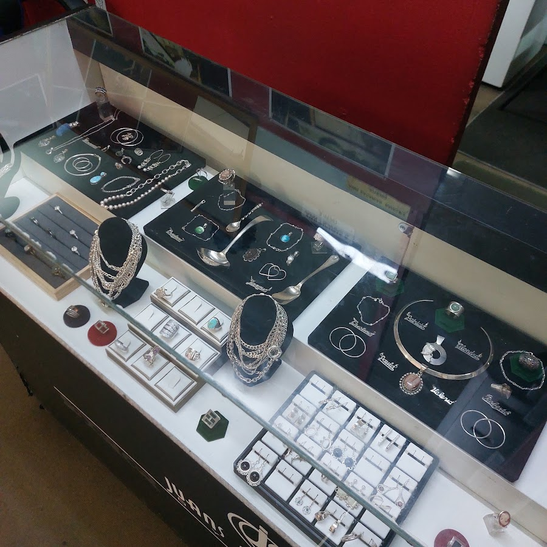

Servicios del taller
Trabajo artesanal, hecho a mano en Santiago Centro
Nuestras piezas
Vitrina del taller en Merced 832

Anillos, aros, collares y pulseras en plata — hechos y reparados en el taller.
📱
Catálogo siempre visible
El cliente ve el trabajo antes de ir al local.
💬
Consulta directa
Cada servicio abre un chat de WhatsApp ya redactado.
✨
Se ve profesional
Un link para compartir y que lo encuentren en Google.
"Quiero recomendar esta joyería por la excelente calidad de sus trabajos de reparación. Se nota el cuidado en los detalles, la prolijidad y el profesionalismo."
— Francisco Javier Delgado Parra, Google¿Le gustaría esto para su taller?
Le armamos un catálogo a medida, con fotos de sus propias piezas y su número de WhatsApp.
Escribir a Agustín →